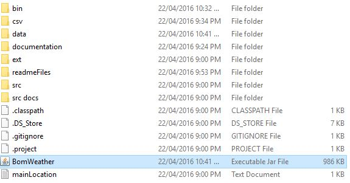

Important Notes
Before you attempt to run the program you will need to have the latest version of java installed, as our solution uses Lambda Expressions introduced in Java 8.
Please check this Java Verification Link to determine you have the latest version of java installed.
Installing the program:
Thankfully, there is close to no effort in running the program
Simply run the BomWeather application straight from your directory as shown.
